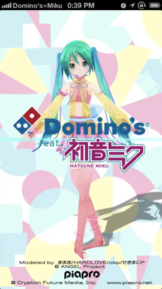
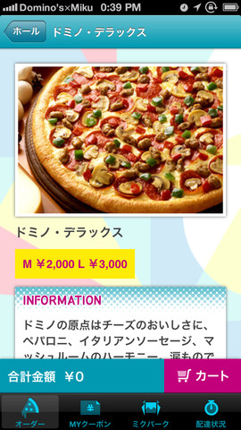
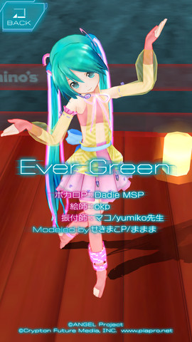
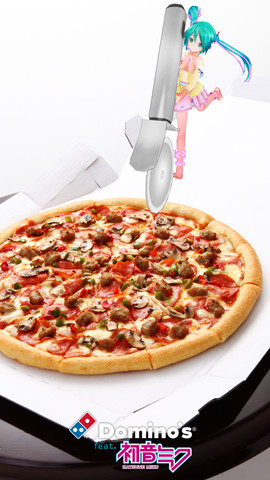
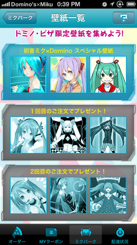

Domino’s App feat. 初音ミク — 宅配ピザのドミノ・ピザ
開発: 株式会社ヒガ・インダストリーズ
App を購入、ダウンロードするには iTunes を開いてください。
説明
Domino’s App feat. 初音ミクが待望のバージョンアップしました。
ミクデザインでピザが注文できる！ドミノクルーがプロデュースした楽曲でピザの注文状況が聞ける！など基本機能はもちろんそのままにコラボアプリがさらにパワーアップ！
＿＿＿＿＿＿＿＿＿＿＿＿＿＿＿＿
●新コスチュームの初音ミクとピザの写真を撮ろう！
「ソーシャルピザカメラ機能」搭載！ドミノ・クルー達がデザインした衣装の初音ミクと一緒に写真を撮ろう！表情やポーズを自由に組み合わせて、自分だけの写真を撮ることができます。
新しいコスチュームの初音ミクも必見！
●新曲追加！ピザボックスで初音ミクLIVEを楽しもう！
ピザが到着したら、「Pizza Stage Live」機能を起動しよう。
カメラをピザボックスに向ければ、LIVEステージに早変わり。
ドミノ・ピザ×初音ミクのスペシャルライブをARで楽しめます。
新曲も追加しました！ステージもダンスもすべてリニューアル！
今回ももちろん、作詞・作曲、衣装デザイン、ダンス振り付けもドミノ・クルーがプロデュース！
●ドミノ・ピザオリジナル壁紙を集めよう！
アップからドミノ・ピザオリジナルiPhone用壁紙をダウンロードしよう！ドミノ・クルーがプロデュースした初音ミクデザインから、HATSUNE Appearanceの”ままま式あぴミク”デザインまで、ここでしか手に入らない限定壁紙をダウンロードができます。
＿＿＿＿＿＿＿＿＿＿＿＿＿＿＿＿＿＿
■ご留意事項
・本アプリケーションをご利用いただくには、ドミノオンライン本店での登録が必要です。
・本アプリケーションは、日本国内のドミノ・ピザ配達エリア内のみでのご注文が可能です。
・ドミノ・ピザ店舗の営業時間内のみオーダーが可能です。
・一部ご利用いただけない商品・サービスがございます。また、チラシやメール配信などで入手されたクーポンは、App内ではご利用いただけません-
・英語環境には対応しておりませんので、日本語環境でお使いください。
・iPod touchは第５世代以降の機種でご利用いただけます。(ただし、GPSなど一部機能は除く。)
・iPadでもご利用いただけますが、GPS機能を使った現在地へのお届けはできません。
・ピザ・パスタ・ホットサブのいずれかをご注文いただき、お買い上げ総額1000円以上でデリバリーいたします。
バージョン 1.14 の新機能
壁紙提供機能の追加
PizzaStageLiveに新曲追加
ソーシャルピザカメラに新衣装追加
オープニングムービーの更新
iPhone スクリーンショット





カスタマーレビュー
クレジットカード入力が使えない
いまだにクレジットカード入力がだめ！
有効期限入力のメニューデータが補正されていない！
現金払いしか選択できない！
ログイン出来ない？
当方、会員登録してiPadからいつもドミノピザHPでログインして注文出来ていたのですが、今回このアプリを知って使用した際に、メールアドレスもパスワードも正確に入力してもログイン出来ない状況でした。
※ちなみにiPhone5から本店ホームページに行き、ログインしようとしたらやはり無理でした。なぜipadでしかログイン出来ないのか謎です。
ログイン出来なきゃ無意味
登録情報(メールアドレスとパスワード)を変更してもweb上でログインしてるのにアプリケーション側で認識出来ない。よって0点
- 無料
- カテゴリ: ライフスタイル
- 更新: 2013年7月14日
- バージョン: 1.14
- サイズ : 48.9 MB
- 言語: 日本語、英語
- 販売元: K.K.HigaIndustries
- © Domino's Pizza Japan, Inc. All Rights Reserved.
条件: iPhone 4、iPhone 4S、iPhone 5、iPod touch (第4世代)、iPod touch (第5世代)、iPad 2 Wi-Fi、iPad 2 Wi-Fi + 3G、iPad (3rd generation)、iPad Wi-Fi + 4G、iPad (4th generation)、iPad Wi-Fi + Cellular (4th generation)、iPad mini、およびiPad mini Wi-Fi + Cellular に対応。 iOS 5.0 以降が必要 iPhone 5 用に最適化済み